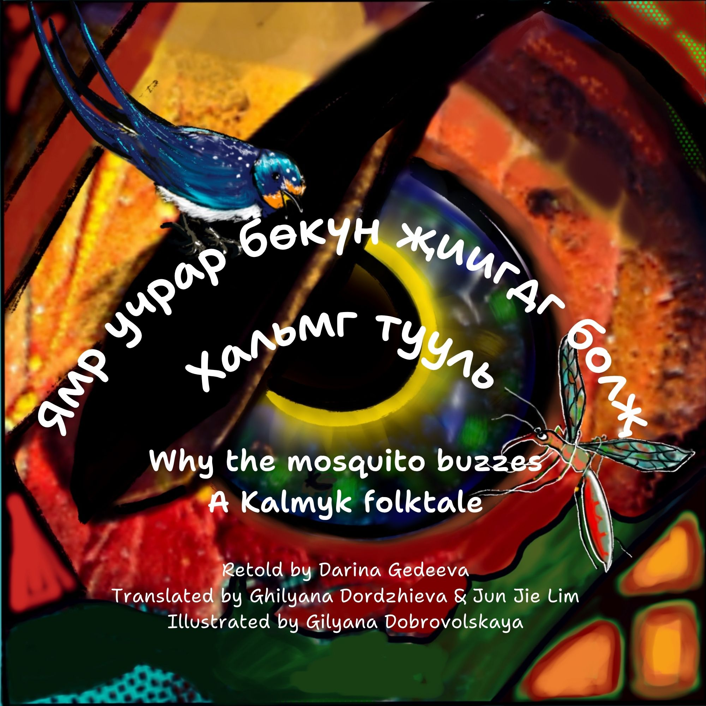

Long ago, a fearsome snake sends a mosquito on a quest to find the tastiest meal.
Find out what happens in this lively Kalmyk tale retold by Darina Gedeeva and vividly illustrated by Gilyana Dobrovolskaya.
Listen to the story read aloud by Darina in Kalmyk: